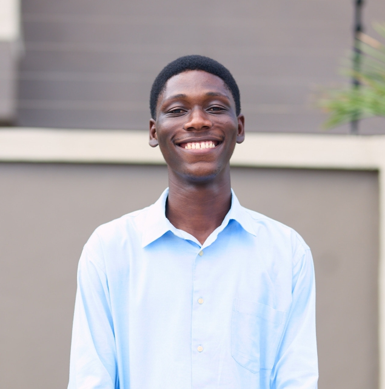

Principal Investigator

Edmund Ilimoan Yamba
Senior Lecturer / Research Scientist
Ph.D., Meteorology and Climate Science, University of Cologne, Germany
M.Sc., Geophysics, KNUST
B.Sc., Physics, KNUST
Phone: +233-200-87-6117
Email: eiyamba@knust.edu.gh
Address: KNUST, Kumasi, Ghana
Graduate Students

Mary Jesse Agyei (PhD Student)
Research focus: Heat-related mortality and land-use change in Ghana.

Elizabeth Owusu Ansah (MPhil Student)
Research interests: biometeorology, epidemiology and public health.

Desmond Osei-Tutu (MPhil Student)
Research interests: Air quality, biometeorology and disease modelling.
National Service Personnels

Alex Kwao Ablerdu
Teaching Assistant

Grace Nabe
Teaching Assistant

Elizabeth Ansah Omari
Teaching Assistant
Joshua Oduro Yeboah
Teaching Assistant

Richmond K. Elorm Dzahene
Teaching Assistant
Alumni Worldwide Network
Explore where our alumni are currently located around the world. Hover or click markers to view names, institutions and current roles.